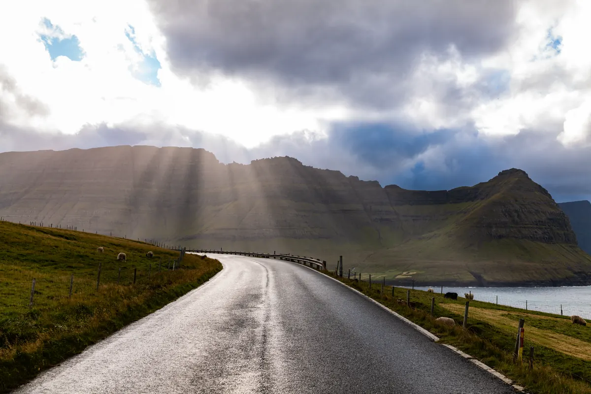

Coffee after dark
A late bar in Cabecera that roasts on Thursdays and pours until midnight.
Find the bar
Where the beans grow
Two farms on the plateau above the canyon send us their lots in April and October.
Roasted on Thursdays
Gone by Sunday, every week.
Four lots this month




Open at seven
Until midnight, Tuesday to Sunday.

Twelve kilos a roast, so nothing waits on a shelf.
The bar

Six stools, one machine, the roaster behind glass.
The menu

From cherry to cup
Picked, washed, dried, roasted, poured: five stops, one street.


Visit
Carrera 33 with Calle 48, Cabecera del Llano. Tuesday to Sunday, 7 pm to midnight.
Find the bar